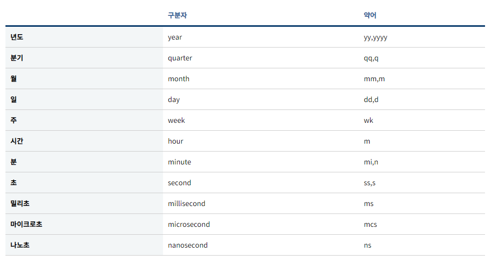

날짜 계산 식
날짜 비교
현재일보다 큰 날짜만 출력
WHERE
해당 월의 마지막 날짜 구하기 => YYYY-MM-DD 형식으로 나옴
SELECT EOMONTH('2020.02.09') AS result
SELECT EOMONTH('2021-02-09') AS result
SELECT EOMONTH('20220209') AS result
-- EOMONTH 함수 없는 서버도 있음
DECLARE @SalesYM NCHAR(6)
,@DateFr NCHAR(8)
,@DateTo NCHAR(8)
,@SalesYMD NCHAR(8)
,@SalesDateTime DATE
SELECT @SalesYM = '202302'
SELECT @SalesYMD = @SalesYM + '01'
SELECT @SalesDateTime = CONVERT (DATE, @SalesYMD)
SELECT @SalesDateTime
SELECT CONVERT(NVARCHAR(8),CAST(LEFT(CONVERT(NVARCHAR, @SalesDateTime, 112), 6) +'01' AS DATE) ,112)
,CONVERT(NVARCHAR(8),DATEADD(D, -1, CAST(LEFT(CONVERT(NVARCHAR, DATEADD(M, 1, @SalesDateTime),112),6) + '01' AS DATE)),112)
=====================================================================================
- 전년도 1월, 12월 구하기
전년도 : CONVERT(NCHAR(4), DATEADD(Y, -1, @StdYY + '0101'), 112)
ex. 2022 -> 2021 구하기
SELECT @PreDateMMFr = CONVERT(NCHAR(4), DATEADD(Y, -1, LEFT(@SalesYM,4) + '0101'), 112) + '01'
SELECT @PostDateMMFr = CONVERT(NCHAR(8),DATEADD(DAY, -1, LEFT(@SalesYM,4)+'0101'),112)
날짜차이
SELECT DATEDIFF('구분자','Start_Date','End_Date')
SELECT DATEDIFF(dd,'2018-01-01','2018-12-31') + 1

날짜 더하기
EX. 하루 더하기
CONVERT(NCHAR(8),DATEADD(DAY, 1, @A),112)